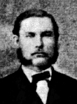

Johan (Janne) Olof Lidén
Organist och Klockare nr 3 i Norsjö fs, Norsjö sn. Blev 34 år.
| Född: | 1843-10-14 Storliden, Norsjö sn. [1] | Klockaren Carl Johan Lidén o. hustrun Gustafva Gustafsdotter i Storliden, 25 år. |
|---|
| Döpt: | 1843-10-17 Norsjö kyrka, Norsjö sn. [2] | Dopvittnen: Kyrkoherden Erik Johan Solander o. hustru; Klockaren Olof Pehrsson o. hustru i Storliden; Dr. Olof Olofsson i Norsjö o. Pigan Hildegard Lidén ibid. |
|---|
| Organist och Klockare: | 1869 Norsjö 6, Norrbyn, Norsjö sn. [3] | |
|---|
| Död: | 1878-01-31 Norsjö 6, Norrbyn, Norsjö sn. [4] | Klockaren och Orgeln. Johan Olof Lidén, 34 år 3 mån 17 dagar. Dödsorsak: Maginflammation. |
|---|
| Begravd: | 1878-02-09 Norsjö fs, Norsjö sn. [5] | |
|---|
| U.ä. relation (?): | 1860 Norsjö 6, Norrbyn, Norsjö sn. |
|---|
| Vigsel: | 1871-04-24 Norsjö 6, Norrbyn, Norsjö sn. [3] |
|---|
Noteringar
Organist och Klockare nr 3 i Norsjö fs, Norsjö sn.
Jag är medveten om att mina antaganden om en ev. nära relation mellan Johan* (Janne) Olof Lidén och Charlotta Fredman är en lösning bland några andra tänkbara, som resulterar i sonen Frans Edvard*.
Augusta Charlotta* Fredman, 22 år, har tjänat i sex år i denna familj innan hon skulle föda sin förstfödde son Edvard Fredman. De är tillsammans vid en nattvard när Charlotta är höggravid med Edvard Fredman, min farfars far. Johan* (Janne) Olof Lidén har inte deltagit i någon nattvard under de sex år, som Charlotta har tjänat hos familjen Lidén utom då han följer Charlotta i nattvarden enligt prästens noteringar (Källa: Norsjö fs HFL). På sin dödbädd finns inte Frans Edvard med i hans testamente utan endast sonen Emil född 1876-12-04 och som avlats inom äktenskapet med Gustava Persdotter Ström. Sonen Johan Edvard* Lidén är dödfödd 1875-06-23. Johan* (Janne) Olof Lidén hade även enl. släkten ett annat u.ä. barn. Däremot känns man inte vid några u.ä. barn med Charlotta Fredman. Här hopar sig frågetecknen.
Johan* (Janne) Olov Lidén. Klockare och organist i Norsjö nr 6 - 5/64 mtl. Född 1843-10-14 Storliden, Norsjö fs. Döpt 1843-10-17 Storliden, Norsjö fs. Bosatt från 1850 Norsjö, Norsjö fs. Död 1878-01-31 Norsjö, Norsjö fs. Begravd 1878-02-09 Norsjö, Norsjö fs. Janne Lidén, som han kallades, föddes på Storliden år 1840. Något år efter fadern Carl Johans död så kom han att överta halva dennes hemman Norsjö nr 6. När han gift sig så är han benämnd som bonde där. Hemmanet var då på 5/64 mtl.
Förutom bondesysslan var han även verksam som klockare och organist. Klockarsysslan i Norsjö församling övertar han efter det att fadern avlidit år 1870, och organistexamen avlade han i Härnösand den 27/10 samma år. Utöver dessa sysslor hade han också många förtroendeuppdrag, bl.a. kommunalstämmans (nuvarande kommunfullmäktiges) ordförande. Han var också verksam som postföreståndare framgent från cirka år 1870 i Norsjö. I den sistnämnda tjänsten efterträds han först av sin bror Carl Otto, sedan av brodern Conrad och därefter av brorsonen Hjalmar." (Källa: Åke Lidén) "Janne blev bara drygt 34 år. I kyrkoböckerna anges som dödsorsak 'maginflammation', troligtvis menas därmed brusten blindtarm." (Källa: Åke Lidén)
Janne bygger nya hus uppe vid landsvägen. Familjen bodde på den nutida adressen Storgatan 93. (Källa: Åke Lidén)
Hustrun Gustava hade ett stort hemman i Kvammarnäs, beläget ca 12 km väster om Norsjö, med sig i boet när de gifter sig år 1871. (Källa: Åke Lidén). Familj med Gustava Ström (Född 1842-09-05 Kvammarnäs, Norsjö fs. Död 1937-02-21 Norsjö, Norsjö fs.) Vigsel 1871-04-24 Norsjö fs.
Barn i äktenskapet:
Johan Edvard* Lidén. Född 1875-06-23. Död samma dag. Här kommer namnet Edvard igen!
Johan Emil Lidén. Född 1876-12-04 Norsjö, Norsjö fs. Död 1951-02-06 Norsjö, Norsjö fs.
Därutöver finns barn utom äktenskapet.
Personhistoria
| Årtal | Ålder | Händelse |
|---|
| 1843 |
|
Födelse 1843-10-14 Storliden, Norsjö sn [1] |
| 1843 |
3 dagar |
Dop 1843-10-17 Norsjö kyrka, Norsjö sn [2] |
| 1845 |
1 år |
Brodern Gustaf Robert Lidén föds 1845-07-06 Storliden, Norsjö sn [6] |
| 1847 |
3 år |
Brodern Gustaf Robert Lidén dör 1847-02-05 Storliden, Norsjö sn [6] |
| 1848 |
4 år |
Brodern Gustaf Konrad Lidén föds 1848-05-13 Storliden, Norsjö sn [7] |
| 1851 |
8 år |
Brodern Karl Otto Lidén föds 1851-12-05 Norsjö, Norsjö sn [7] |
| 1854 |
10 år |
Brodern Per Leo Lidén föds 1854-02-01 Norsjö 6, Norrbyn, Norsjö sn [8] |
| 1856 |
12 år |
Brodern Erik Vilhelm Lidén föds 1856-06-10 Norsjö 6, Norrbyn, Norsjö sn [9] |
| 1858 |
15 år |
Systern Hedda Teresia Lidén föds 1858-11-18 Norsjö 6, Norrbyn, Norsjö sn [9] |
| 1860 |
|
U.ä. relation (?) Augusta Charlotta Fredman 1860 Norsjö 6, Norrbyn, Norsjö sn |
| 1861 |
17 år |
Sonen Frans Edvard Fredman föds 1861-02-26 Norsjö, Norsjö sn [10] |
| 1869 |
|
Organist och Klockare 1869 Norsjö 6, Norrbyn, Norsjö sn [3] |
| 1870 |
26 år |
Fadern Carl-Johan Olofsson Lidén dör 1870-02-17 Norsjö 6, Norrbyn, Norsjö sn [11] |
| 1871 |
27 år |
Vigsel Gustava Persdotter Ström 1871-04-24 Norsjö 6, Norrbyn, Norsjö sn [3] |
| 1875 |
31 år |
Sonen Johan Edvard Lidén föds 1875-06-23 Norsjö 6, Norrbyn, Norsjö sn [12] |
| 1875 |
31 år |
Sonen Johan Edvard Lidén dör 1875-06-23 Norsjö 6, Norrbyn, Norsjö sn [13] |
| 1876 |
33 år |
Sonen Johan Emil Lidén föds 1876-12-04 Norsjö 6, Norrbyn, Norsjö sn [14] |
| 1878 |
34 år |
Död 1878-01-31 Norsjö 6, Norrbyn, Norsjö sn [4] |
| 1878 |
|
Begravning 1878-02-09 Norsjö fs, Norsjö sn [5] |
Källor
| [1] | Norsjö C:2 (1843-1852) s.9 k2/3, AI:4 (1843-1852) fol. 35 k.1/5 |
| |
| | |
| [2] | Norsjö C:2 (1843-1852) s.9 k2/3 |
| |
| | |
| [3] | Norsjö AI:6 (1862-1871) fol. 16 k.1/9 |
| |
| | |
| [4] | Norsjö F:2 (1860-1889) s.34 k.1/2, AI:7 (1872-1881) fol.18 k.1/11 |
| |
| | |
| [5] | Norsjö F:2 (1860-1889) s.34 k.1/2 |
| |
| | |
| [6] | Norsjö AI:4 (1843-1852) fol. 35 k.1/4 |
| |
| | |
| [7] | Norsjö AI:4 (1843-1852) fol. 11 k.1/4 |
| |
| | |
| [8] | Norsjö AI:5 (1853-1861) fol. 15 k.1/9 |
| |
| | |
| [9] | Norsjö C:3 (1853-1865) k.1/3, AI:5 (1853-1862) fol. 15 k.1/9 |
| |
| | |
| [10] | Norsjö C:3 (1853-1864) k.1/3, AI:5 (1853-61) fol. 268 k.9/9 |
| |
| | |
| [11] | Norsjö F:2 (1860-1889) s.19 k.1/2, AI:6 (1862-1871) fol.16 k.1/9 |
| |
| | |
| [12] | Norsjö C:3 (1853-1878) |
| |
| | |
| [13] | Norsjö F:2 (1860-1891) |
| |
| | |
| [14] | Norsjö C:3 (1865-1878) k.3/3 |
| |
|
|  |
Klockaren/kommunalstämmans ordf. Johan (Janne) Lidén. I sin ungdom blev han far till Edvard Fredman, född utom äktenskap. Fastställt genom Y-DNA-test.
Haplogrupp: I1> DF29> Y11210> Y24470, ca 225 år till min förfader (korpral Per Mikaelsson-Lax-Bur) räknat från mig Jan Fredman.
|
|
{kind=link}